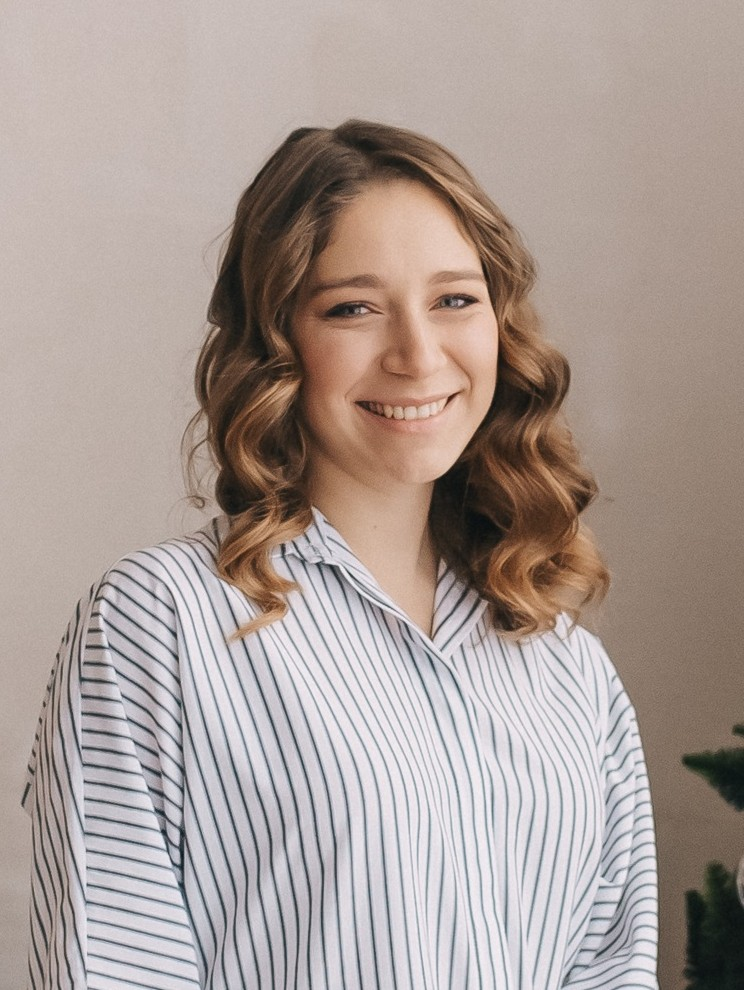
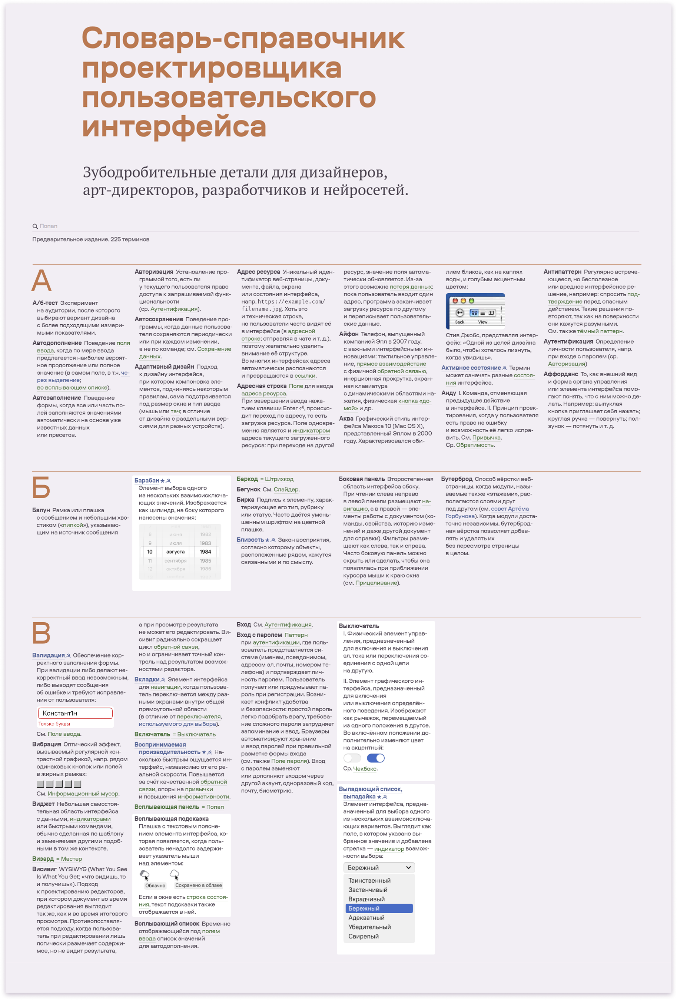
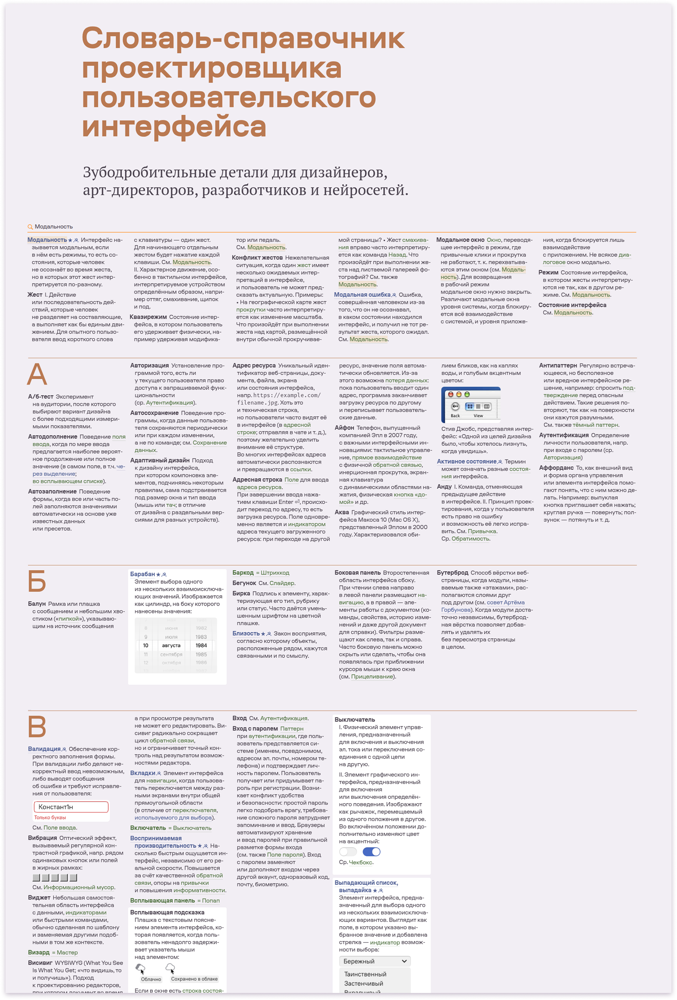
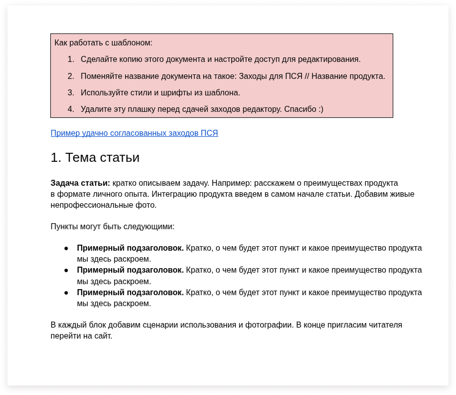
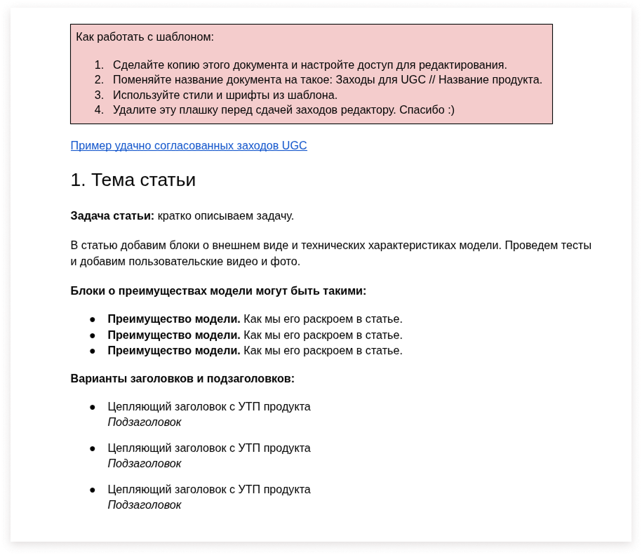
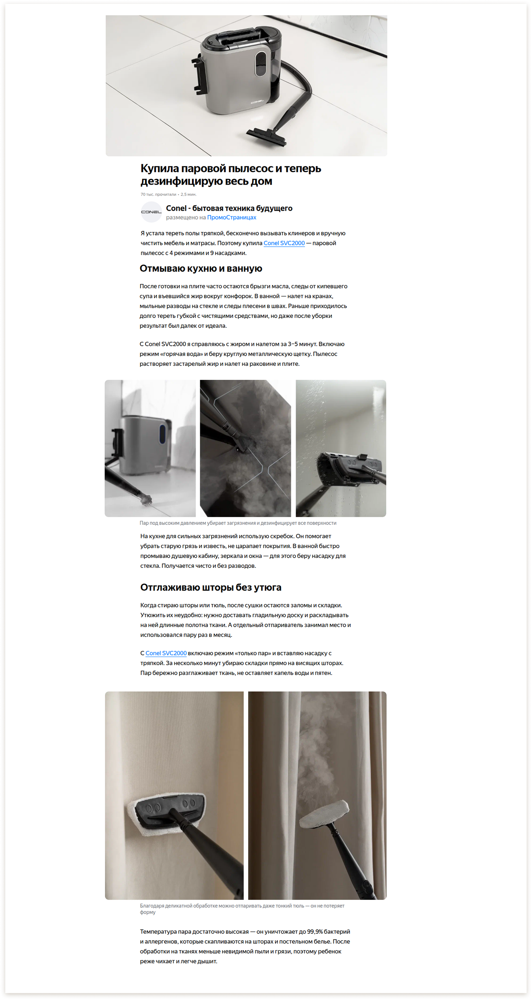
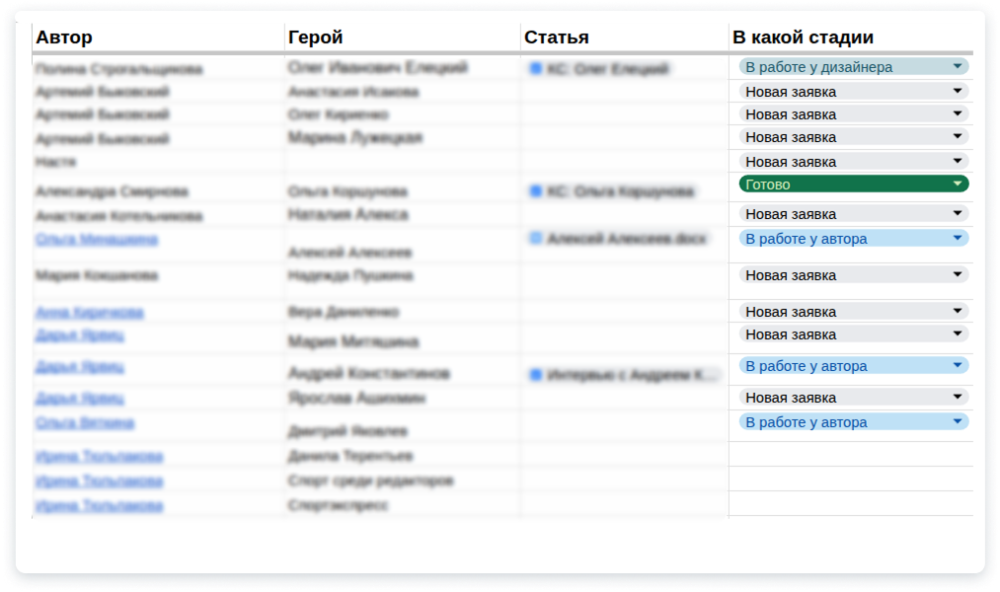
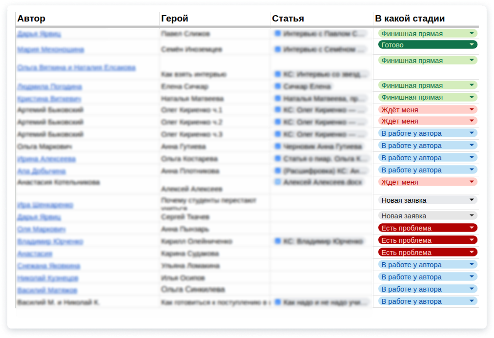
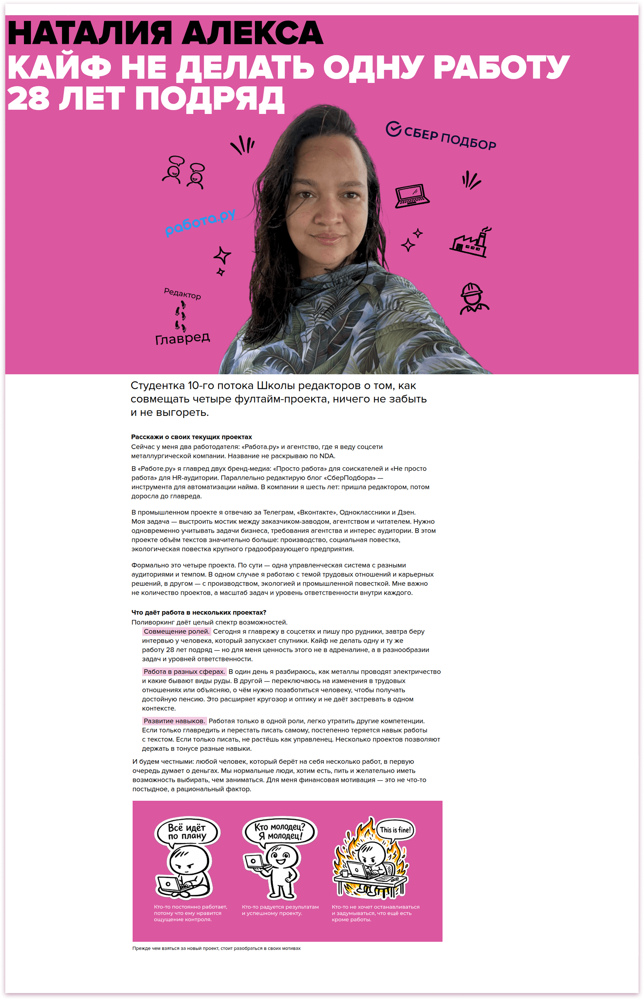

Александра Озкан,
шеф‑редактор

Опыт работы
Редактор Словаря-справочника проектировщика пользовательского интерфейса (сентябрь 2026 — ноябрь 2026)
За шесть недель вместе со вторым редактором собрали и подготовили справочник к выпуску:
- поговорили с заказчиком проекта и составили понимание задачи;
- собрали перечень готовых материалов, которые уже можно включить в справочник, и материалов, которые еще предстоит создать;
- разделили материалы для написания на две категории: а) те, которые точно нужно сделать к первой итерации и без которых справочник не будет иметь смысла; б) те, которыми можно пожертвовать, чтобы выпустить справочник в срок.
Я отвечала за большую часть работы с текстом: написала четыре большие поясняющие статьи и около 100 коротких описаний терминов для главной страницы.


Шеф-редактор в My Gadget | IB Studio (май 2024 — настоящее время)
Агентство только пробовало себя в новых форматах, поэтому в процессах была путаница. На согласование с клиентом уходили заходы в разных форматах от разных авторов, даже если речь шла об одном формате статьи. Кто-то понимал заход как короткую статью, кто-то — как идею в двух предложениях.
Чтобы упорядочить процесс, я собрала шаблоны для авторов в двух самых частых форматах: Промостраницы Яндекса и обзоры.


В результате заходы стали писать быстрее и в одинаковом формате, а редактор тратил меньше времени на исправление структуры. Вот какие статьи стали получаться:

Главный редактор в журнале «Кто студент» (январь 2026 — май 2026)
До меня журнал выходил силами двух-трех постоянных авторов и самого главреда. Материал готовился впритык перед выпуском, выходил с ошибками и опечатками. Когда я пришла на должность, в таблице редакции значились четыре статьи в работе, десяток статей с непонятным статусом и только одна готовая — для ближайшего выпуска.

Таблица редакции в начале моей работы
К концу четвертого месяца я наладила стабильный поток выпусков и построила работу с запасом: одновременно в работе было несколько материалов, а план публикаций составлялся на три недели вперед. Для этого много общалась с авторами, рассказывала о преимуществах журнала, помогала выбрать тему, о которой было бы интересно написать, и готовиться к первым интервью.

Таблица редакции после четырех месяцев работы
Всего за 4 месяца я выпустила 20 статей-лонгридов для начинающих digital-специалистов.

Места работы
My Gadget | IB Studio
(май 2024 — настоящее время)
Автор рейтингов, сценариев видео для YouTube, редактор, шеф-редактор.
Редакция «Рыба»
(ноябрь 2023 — август 2025)
Автор.